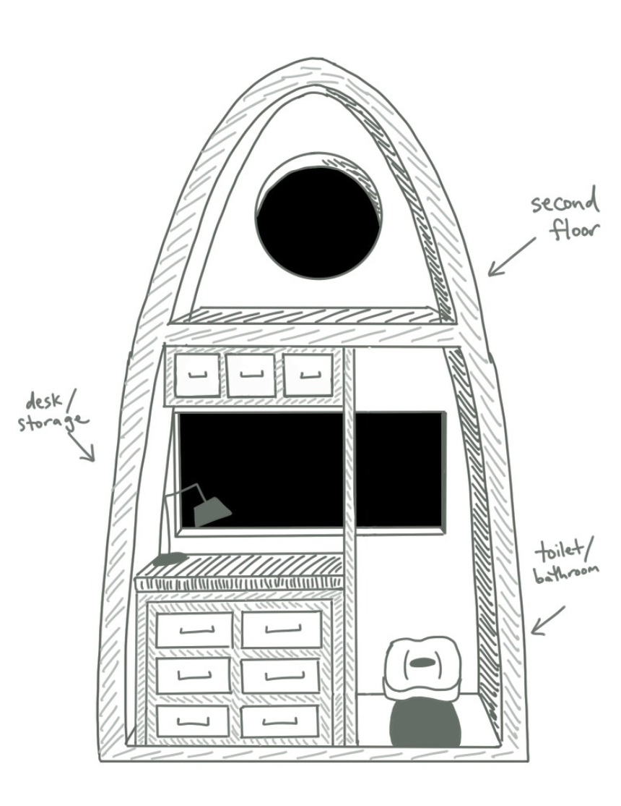
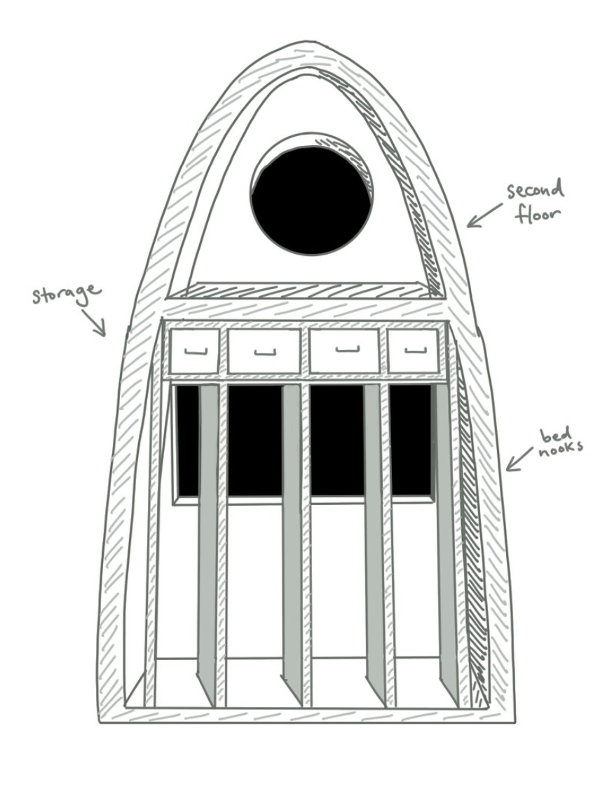

HALO Space Habitat (Jan. 2023 - Apr. 2023)
The Lunar Gateway Habitation and Logistics Outpost, or more informally known as HALO, was a project myself and my 3 friends built for the Professional Engineers of Ontario Engineering Idol Competition, earning us 1st place overall.

One side of our design

The other side of our design